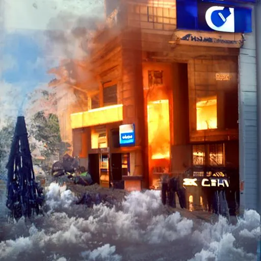
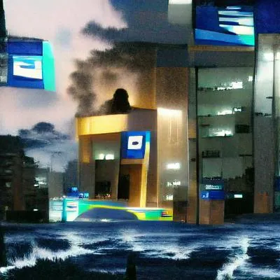

There are reasons that you have not frequently seen a representative of Brazeltonz's Banking. Firstly, they simply have better things to be doing with their time than helping you, such as being fed as sacrifices to the unspeakable creature that resides in the caves of Ivelvian, of which you should probably forget you have ever heard. No, simply put, we don't really have the time or the energy to go around helping people all the time. Do you know how much effort it takes to deal with a "customer" who thinks they deserve your help simply because they can't figure out how our immensely simple website functions? How is that my problem? There is legend of one paticularly annoying member of our banking community who, when asking our founder Stu Brazeltonz himself for help understanding where all of her money was going when obviously it was just being securely transferred to keep it safe and secure from the infestation of tiny sentient asparigus that were hungry for blood and knew how to put our trained dragons to sleep by using the manual we had carelessly left in the public domain so that anybody could find it with a quick Google search, was told that she was wasting his precious time. In response to this perfectly reasonable point by our precious and powerful founder, this woman stormed out claiming that she would be moving to... let's just say a competitor. Strangely, several of the banks of this competitor's franchise experienced severe fires that brought them to the brink of destruction. However, fortunately, they were able to recover from this setback and still remain a well-known banking name to this day. Nobody knows how the fires started.
 
Unexplainable fires of a competitor franchise.
Anyway, if you really insist on trying to get support from us, you can risk trying to contact Stu Brazeltonz himself, although nobody has seen or heard from him in quite a long time at this point. Maybe you'll be different. Maybe he cares about your experience. If you do choose to contact him, please don't mention me.
stubrazeltonz@gmail.com Or if you're not feeling quite that stupid, you could try this one I guess. It totally gets checked. brazeltonzsbank@gmail.com You might want to read up on Stu Brazeltonz before you try to contact him though. You can do that here.